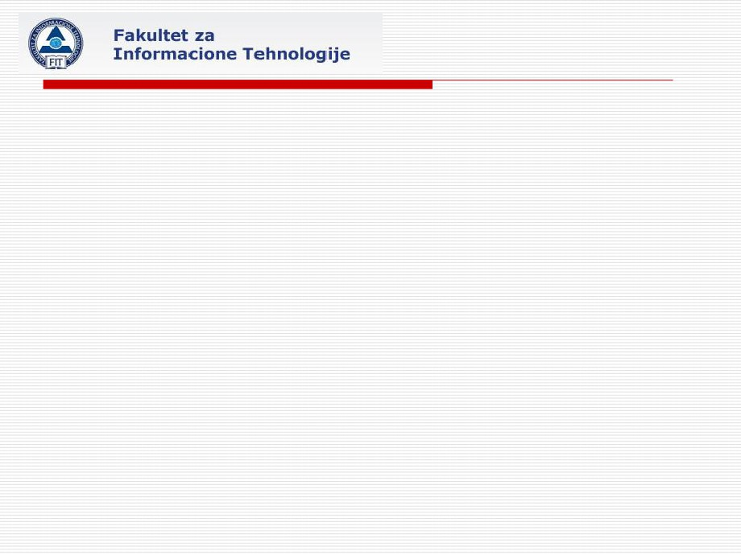
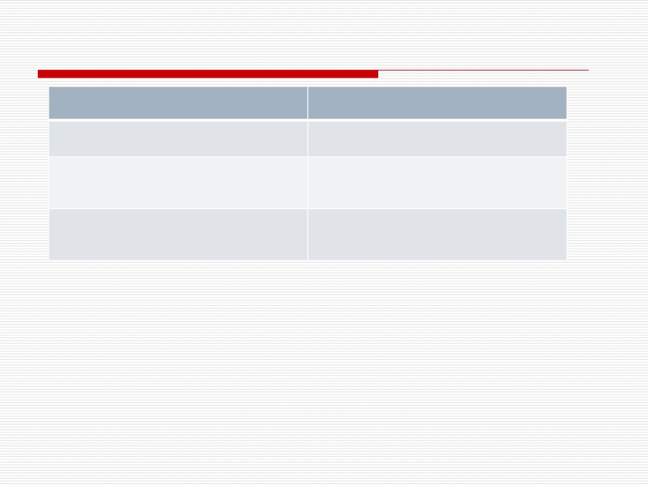
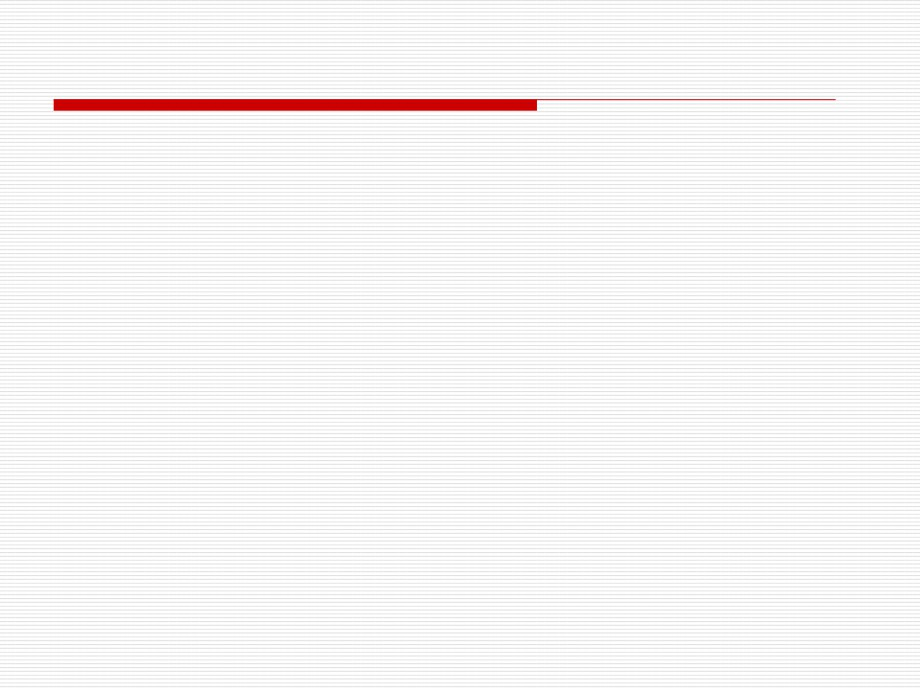

PROJEKTOVANJE INFORMACIONIM SISTEMIMA
1
Osnove korisničkog interfejsa
Prezentacioni sloj je dio poslovne aplikacije koja omogućava
mehanizam komunikacije između korisnika i sloja poslovnih
servisa sistema
2
Elementi prezentacionog sloja
Jednostavan prezentacioni sloj sadrži komponente
korisničkog interfejsa koji su smješteni u grafički korisnički
interfejs (GUI) kao što je:
◼ Microsoft Windows Forms ili
◼ Microsoft ASP.NET Web forme
Za kompleksnije korisničke interakcije možete dizajnirati
korisničke procesne komponente koji rade sa UI elementima
i u interakciji je sa korisničkim kontrolama
Korisničke procesne komponente su specijalno korisne kada
postoje specifični procesi kojima se može pristupiti preko
različitih procesa u zavisnosti od korisnika
3
Ulazi za dizajn prezentacionog sloja
Informacije koje su istražene, analizirane i optimizovane u fazi
predviđanja i planiranja su ulazi za dizajn prezentacionog sloja:
1. Zahtjevano rješenje i ograničenja
2. Korisnički scenario
3. Modele radnog toka
4. Korisničke profile
5. Opis aktivnosti
4
Komponenta korisničkog interfejsa
Prva oblast prezentacionog sloja koju ćete naučiti ovdje je korisnički
interfejs
Na neki način ovaj interfejs bi trebao razmotriti najvažnij dio
poslovne aplikacije zato što najveći broj korsnika koristi aplikaciju
Dobro dizajnirani korisnički interfejs pomaže da dođete do uspjeha i
stvara mogućnost prihvatanja poslovne aplikacije
Komponente korisničkog interfejsa upravljaju interakcijama korisnika
Oni ispisuju podatke o korisniku, sakuplja podatke od korisnika,
interpretira događaje koji su proizveli korisničke aktivnosti, mijenjaju
stanje korisničkog interfejsa i pomaže korisniku da sagleda progres
u njihovim aktivnostima
5
Funkcije komponenata korisničkog interfejsa
Komponente korisničkog interfejsa:
◼ ispisuje podatke korisniku,
◼ prikuplja i vrednuje podatke sa korisničkog ulaza, i
◼ interpretira korisničke akcije koje uključuje šta korisnik želi da predstavi sa
operacijama na podacima.
Dodatno, korisnički inetrfejs bi trebao da filtrira moguće akcije koje
korisnik bi mogao da koristi u toj tački aplikacije
6
Funkcije komponenata korisničkog interfejsa
Funkcije - Komponente korisničkog interfejsa predstavljaju sljedeće
funkcije:
◼ Prikupljanje podataka od korisnika i asistiranje prilikom unosa podataka preko
ispitivanje validacije odgovarajućih akcija na kontrolama
◼ Hvatanje događaja korisnika i pozivanje funkcija kontrolera za beleženje
komponenata korisničkog interfejsa za promjenu načina ispisa podataka na
tekućem korisničkom procesu ili preko mijenjanja podataka tekućeg korisničkog
procesa
◼ Zabrane tipa podataka za unos koje korisnik može unijeti
◼ Predstavljanje vrednovanje unosa podataka
◼ Predstavljanje jednostavnog mapiranja i transformisanje informacija koje su
omogućene preko kontrola korisnika za vrijednosti koje su potrebne
komponentama za njihov rad
7
Funkcije komponenata korisničkog interfejsa
Predstavlja fomatirane vrijednosti
Predstavlja bilo koji lokalni rad na redudatnim podacima
Omogućava korisniku informacije o statusu
Izbor pojavljivanja aplikacije baziranom na korisničkim
pravima ili vrsti klijentskih uređaja koji se koriste
8
Uputstvo za dizajn korisničkog interfejsa
Dizajniranje korisničkog interfejsa omogućava iskusnom korisniku
da zahtjeva znanje i razumjevanje korisničkih potreba i radnog toka
Vi akumulirate ove informacije za vrijeme faza predviđanja i
planiranja.
9
Upustva
Dizajn interfejsa mora implementirati korisničke aktivnosti na način
koji je pogodan za korisnika
Ovaj cilj je ostvariv preko uključivanja korisnika u sve djelove dizajna
korisničkog interfejsa
Prototipovi, beta testiranja, i rani programi su metode za uključivanje
korisnika za vrijeme dizajna i primjenu UI
Uspjeh ili neuspjeh aplikacije može zavisiti od korisničkog interfejsa
Ako korisnici imaju teškoća prilikom korišćenja interfejsa, oni to vide
kao neuspjeh aplikacije
10
Pitanja za dizajn?
1. Kako će korisnici da budu u interakciji sa sistemom?
2. Da li interfejs predstavlja koncepte i terminologiju korisnika?
3. Da li je odgovarajuća metafora iskorišćena prilikom dizajna
korisničkog interfejsa?
4. Da li korisnici imaju kontrolu da zahtjevaju ponovno iščitavanje
automatskih procesa kada im je potrebno?
5. Mogu li korisnici lako pronaći zahtjevane osobine za kompletiranje
zajedničkih aktivnosti?
6. Da li je radni tok korektan i kompletan?
7. Da li je interfejs optimizovan za radni tok korisnika?
8. Mogu li korisnici lako pristupiti Help-u za specifični problem?
9. Da li je korisnicima omogućeno mijenjanje UI za njihove pojedinačne
potrebe?
10. Postoji li alternativni načini za predstavljanje specifičnih aktivnosti u
slučaju povećanja problema?
11
Elementi interfesja i metafore
Koristeći familijarne metafore za predstavljanje elemenata
korisničkog interfejsa, omogućava se način prenosa korisničkog
znanja i iskustva za dizajn korisničkog interfejsa
Metafore se oslanjaju na korisničkom prepoznavanju prije nego
na ponovnom sakupljanju
Korisnici prepoznaju glavne osobine srodnih objekata i to je lakše
nego da pamte ime pojedinačnih komandi
12
Osobine koje dobro dizajnirani interfejs uključuje
Ako interfejs nije dobar za rad iskusnog korisnika, onda je vrijeme
za razvoj aplikacije izgubljeno
Međutim ne pravite kompromis sa funkcionalnošću čineći
aplikacijski interfejs korisnički prihvatljivim
Uzimajući u obzir korisnike i zahtjevani korisnički interfejs i radni
tok bi trebalo uzeti u razmatranje za vrijeme dizajna i razvoja
13
Osobine koje dobro dizajnirani interfejs uključuje
Sledeće osobine pomažu da napravite dobar interfejs:
1. Da je intuitivno dizajniran
2. Da je optimalno iskorišćeni prostor na ekranu
3. Da ima odgovarjuće pojavljivanje
4. Da ima laku navigaciju
5. Da ima kontrolisanu navigaciju
6. Da su postavljene tekuće vrijednosti
7. Da ima ulaznu validaciju
8. Da posjeduje menije, tolbarove i help
9. Da prihvata efikasno događe
14

PROJEKTOVANJE INFORMACIONIM SISTEMIMA
15
Dizajniranje korsničkog interfejsa
Prvi dio dizajniranja korisničkog interfejsa je kreiranje početnog
dizajna koje korisnik može da pregleda
Početni dizajn može biti napravljen sa niskom vjernošću ( na
primjer kreiranjem sa olovkom na papiru) ili visoko vjerno (na
primer kreiranje prototipa sa alatom kao što je Microsoft Visual
basic)
16

Visoko vjerno i nisko vjerno dizajniranje
Nisko vjerno
Visoko verno
Pokazuje glavne osobine, strukture i
Pokazuje detaljni izgled ekrana i elemente
navigaciju.
interfejsa
Omogućuje brzo i lako istraživanje
Brza primjena i izmjena ali zahtjeva
alternativnog dizajna
kompjuter i softver
Odličan za razmišljanje i brzapovratna
Tipično razvijen iz nisko vjernog dizajna
informacija. Omogućava uglavnom
jesno indentifikaciju problema dizajna
❑
Dizajn početnog interfejsa bi trebao da koristi metafore i
elemente koje su usaglašene sa korisnicima.
Oni bi trebalo takoÿe da uključe terminologiju i
koncepte korisnika
17
Kreiranje navigacione i mape toka
Navigaciona mapa za korisnički interfejs pokazuje koje
komponente su pozvane kada je događaj u korisničkom
interfejsu je aktiviran
Zadržavati pažnju na toku korisničkog interfejsa, ne uključuje
greške validacije ili greške procesiranja
18
Omogućavanje korisničkih pomoći
Korisničke pomoći su često zanemarljive, ili malo primjenjene u
kompjuterskim aplikacijama
Postoje nekoliko mogućnosti za omogućavanje korisničkih
pomoći u aplikacijama.
19
Pomoć na liniji
Pomoć na liniji podrazumjeva bilo koju pomoć koja se
istovremeno dobija čim korisnik pošalje zahtjev i dok je u
interakciji sa sistemom
Ova pomoć može biti instalirana sa aplikacijom, da je locirana na
CD-u ili da je locirana na intranetu
Pomoć na liniji je važan dio svih aplikacija i omogućava efektivan
način za odgovor na sva pitanja
20

ToolTips (Savjeti)
Savjeti su male labele koje ispisuju kada korisnik pomeri miša
preko kontrole ili opcije na korisničkom interfejsu
Savjeti se normalno koriste u konjukciji sa tulbarovima, ali oni
takođe dobro rade i u mnogim drugim delovima interfejsa
21
Status Display (ispis statusa)
Ispis statusa je koristan način za omogućavane uputstava ili
poruka koje se ne mogu lako unijeti u savjete (ToolTips)
Omogućava ispis statusa i možete ga koristiti za kontrolu
statunog dijela ili kontrolu labela
22
Čarobnjaci
Čarobnjaci su korisnički pomoćni uređaji koji vode korisnika
korak po korak kroz proceduru
Čarobnjaci se takođe koriste za naprednije informacije
korisnicima koji nemaju dovoljno iskustava sa osnovnim
koracima ali žele dodatne ili napredne informacije
23
Pomoći pristupanju
Pomoći pristupanju su specijalizovani programi i uređaji koji
pomažu ljudima sa nemogućnošću korišćenja aplikacija da
budu efikasniji
1.
Povećanje ekrana na najveći dio ekrana
2.
Softver čitanja sa ekrana predstavlja grafike i tekst kao govor
3.
Sistem za prepoznavanje govora za omogućavanje ulaza korišćenjem
govora umjesto tastature ili miša.
Kada se vrši dizajniranje pristupanje aplikacijama, trebalo bi
da se pridržavate sledećih uputstava
1.
Aplikacija bi trebalo da bude kompatibilna sa specifičnim sistemskim
bojama, veličinom, fontovima, zvukom i ulaznim podešavanjima.
2.
Aplikacija nesmije prenijeti informacije jedino preko zvuka.
24
Izbor modela korisničkog interfejsa
Priliko dizajniranja aplikacije važno je da izaberete najbolji model
korisničkog interfejsa, zato što korisnički interfejs može da djeluje
na razvoj, kako interakcije korisnika i relacionih podataka, tako i
održavanje stanja aplikacija:
1. Korisnički interfejs baziran na Windows-u
2. Korisnički interfejs baziran na Web-u
3. Korisnički interfejs mobilnih uređaja
4. Korisnički interfejs baziran na dokumentu
25
Interfejs baziran na Windows-u
Windows bazirani interfejs se koristi kada želite da omogućite
korisnicima, koji nisu u konekciji ili rade offline, mogućnosti i pristup
korisničkoj interakciji
Ovaj interfejs omogučava širok opseg upravljanja stanja i prisutnih
mogućnosti
1. Puna istaknuta radna stanica/ stoni PC korisnički interfejs kreiran
pomoću Windows formi.
2. Ugrađeni HTML
3. Aplikacijski dodaci
26
Puna istaknuta radna stanica/ stoni PC korisnički interfejs
kreiran pomoću Windows formi
Ovaj UI uključuje kreiranje aplikacija sa Windows formama i
Windows kontrolama
U ovim aplikacijama, aplikacija omogućava sve ili najveći broj
podataka funkcionalnosti
27
Ugrađeni HTML
Možete primjeniti unos korisničkog interfejsa korišćenjem
Windows formi, ili možete koristiti dodatno ugnježden Hpertext
Markup Language (HTML) u vašoj aplikaciji koja je windows
bazirana
Ugnježden HTML omogućuje veće vrijeme fleksibilnosti rada
(zato što se HTML može učitati iz spoljnog izvora ili čak baze
podataka u spojenom scenariju) i korisničko prilagođavanje
28
Aplikacijski dodaci
Za neke aplikacije, razvijeni korisnički slučajevi za vrijeme
faze planiranja mogu sugerisati da korisnički interfejs ili
aplikacija, bi mogao bolje da se primjeni kao dodatak za
aplikaciju
29
Daljinski pristup
Pomoću programa kao što je Windows XP Remote Desktop
Connection i Windows terminal Services, udaljeni korisnici mogu
pristupiti udaljenom kompjuteru i da udaljeno startuju aplikacije
Jedina informacija koja prolazi između klijentskog kompjutera i
udaljenog korisnika je korisnički interfejs
Sve druge funkcionalnosti, kao što su validacija podataka i
izvršenje programa pomoću CPU je predstavljeno na udaljenom
kompjuteru
30
Korisnički interfejs baziran na Web-u
U Microsoft .NET vi razvijate Web baziran korisnički interfejs
pomoću ASP.NET
1. Dosledno razvojno okruženje
2. Korisnički interfejs izgradnje podataka
3. Komponentno bazirani UI sa kontrolama
4. Integrisani .NET model sigurnosti
5. Puno keširanje i opcije upravljanja stanjem
6. Mogućnost, performanse i uklopljivost Web procesiranja
31
Korisnički interfejs mobilnih uređaja
Mobilni uređaji su :računari u ruci, protokoli bežične aplikacije
(WAP), telefoni
Računari u ruci postaju sve više popularni i izgrađivanjem
korisničkog interfejsa za mobilne uređaje postavlja nekoliko izazova
Zajedničko rješenje da se omogući korisnicima pre registraciju
podataka preko znanih klijenata baziranih na radnim stanicama i
onda izabrati podatke kada se koristi mobilni klijent
Korisnički interfejs za mobilne uređaje neophodno je da omogući
ispis informacija na mnogo manjem ekranu od drugih interfejsa
aplikacija i mora ponuditi mogućnost korišćenja za uređaje na licu
mesta
32
Korisnički interfejs baziran na dokumentu
U nekim aplikacijama, možete imati pogodnosti od uzimanja
korisničkih unosa ili pogleda podataka u obluki dokumenta
1. Prikazivanje podataka
2. Sakupljanje podataka
33
Prikazivanje podataka
Aplikacija omogućuje korisnicima da pogledaju njihove
podatke u dokumentu, kao što su izveštaji za Word, Excel ili
Project
34
Sakupljanje podataka
Vi možete omogućiti predstavljanje prodaje u obliku Word
forme sa informacijama o kupcu, čiji unos podataka se radi u
Excel-u
35
Izbor klijentskog okruženja
Izbor klijentskog okruženja za korisnički interfejs poslovne aplikacije
je definisanje preko toga kako korisnik će da koristi aplikaciju, i
dodatno kako će korisnik biti u vezi sa sistemima koji podržavaju
aplikaciju
Kada korisnici su na lokalnoj mreži (LAN) ili na (WAN) najveći broj
izabranih klijenta ima osobinu bogatog okruženja poznatu kao
debeli klijent
Za ove korisnike brzina komunikacije između njihovih kompjutera i
sistema nije na prvom mestu
Drugi izbor clijenta je tanki klijent
Međutim tanki klijent kao što su Web browser-i i udaljene desktop
konekcije, su najčešće upotrebljene za udaljene ili distribuirane
korisnike, ili za korisnike sa sporijom konekcijama kao što su
modemi
36
Validacija dizajna korisničkog interfejsa
Kao deo procesa dizajna, validacija korisničkog interfejsa je
okrenuta ka zahtevima kupaca.
37
Proces validacije
Posle kreiranja UI prototipova, neophodno je da poredite:
◼ UI zahtjeve,
◼ korisničke slučajeve,
◼ korisničke scenarije i
◼ logički dizajn
Ako zahtjevi nisu bili ciljani na korisničkom interfejsu,
neophodno je da adresirate ih i unesete u dizajn prije nego
tekući prototip prosledite kupcu
Proces validacije takođe uključuje ocenjivanje izabranih
metafora i kontrola elemenata koji su iskorišćeni za
predstavljanje ovih metafora
38
Isporuke UI dizajn procesa
1. Projektni tim, kupac, i korisnici bi trebalo da se slože oko uputstva
za dizajn, uključujući elemente koji su bili korišćeni u aplikaciji.
Uputstva i indentifikacija glavnih interfejs elemenata, trebalo bi da
se dokumentuje za razvojni tim
2. Dizajn bi trebao da uključi opise kako će interfejs omogućiti
odgovarajuću povratnu spregu (kao što je progres bar) i
korisničku pomoć (kao što su ToolTips) za korisnika
3. Dizajn proizvoda trebalo bi da budu iztestiran preko poređenja sa
korisničkim scenariom budućeg stanja
39